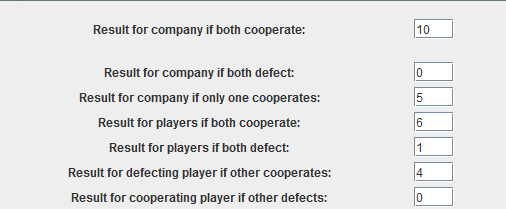
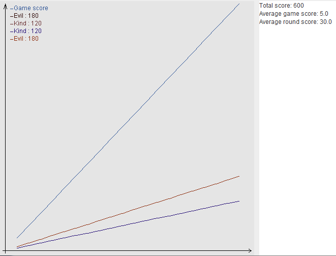
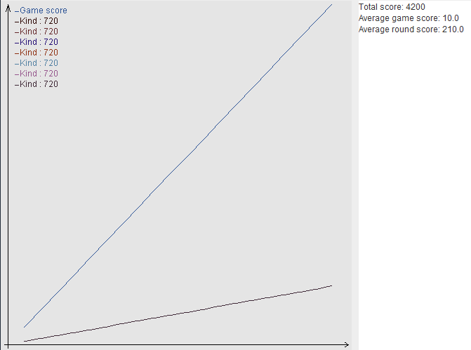
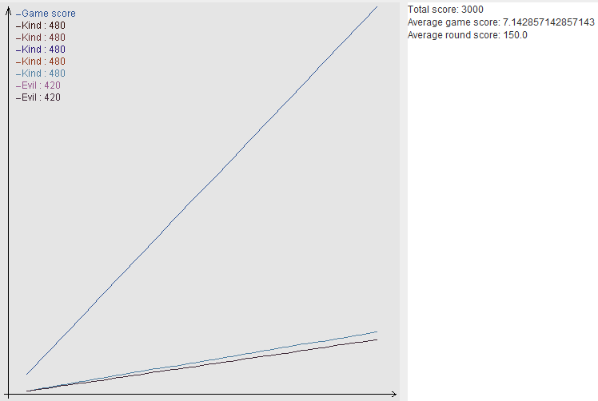
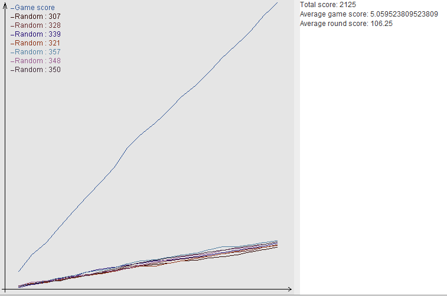
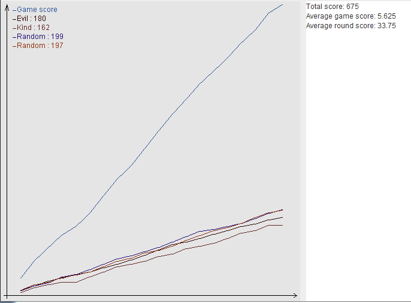
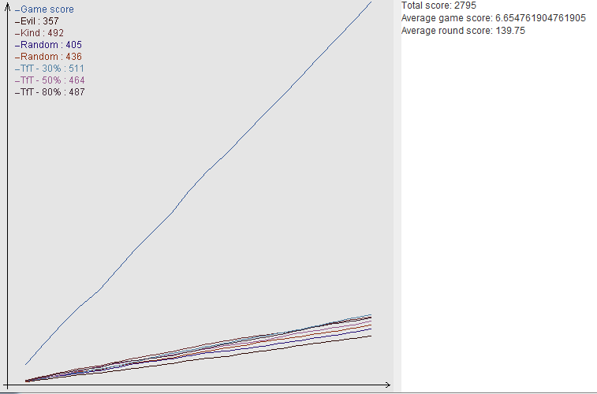
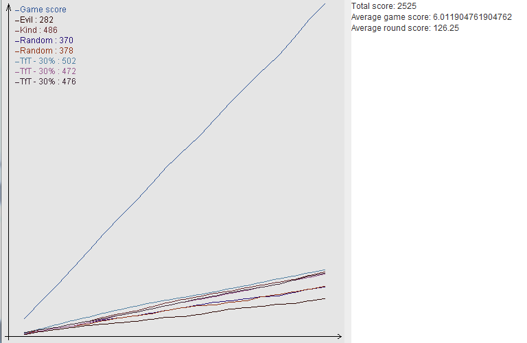
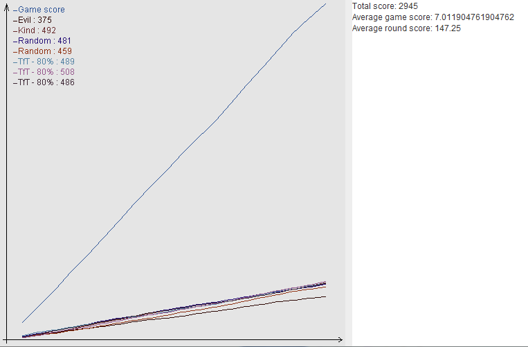

Правила игры при первом эксперименте. Число очков для каждого игрока и для команды при разных исходах

При равном соотношении "добрых" и "злых" игроков "добрые" проигрывают, а вся команда в целом получает небольшое количество очков

Очевидно, что если в команде все "добрые", это приносит максимальное количество очков команде, однако данная ситуация является малореалистичной


Интререс эксперименту придают более реалистичные игроки - со случайной стратегией. Видно, что графики перестают быть линейными, а результат команды
чуть больше половины от идеального случая

В том числе они могут опережать "злых" игроков при удачном стечении обстоятельств

Наличие игроков со стратегией "Око за око" существенно меняет результат. Общекомандный счёт всё ещё сильно меньше идеального,
но личный счёт добрых и "мстительных" игроков превышает счёт игроков со случайной или злой стратегией. При чём самый высокий
результат у игрока с наименьшей вероятностью прощения

Однако, если все трое "мстительных" игроков будут прощать лишь с вероятностью 30%, то общий результат команды ухудшится за счёт того,
что игра, в которой оба предают не приносит команде ничего

Если же наоборот все "мстительные" игроки имеют высокий показатель вероятности прощения, то как они лично, так и вся команда остаются в выигрыше,
а злые игроки получаю меньше всего баллов и начинают задумываться над своим поведением.
Чтобы команда работала эффективнее, необходимо: